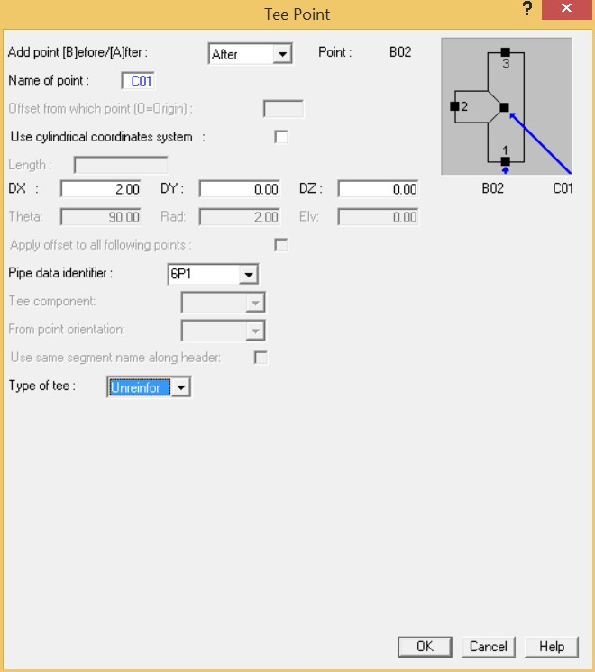
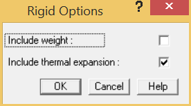

To Connect to Another Segment
- You will now connect B02 to the vessel centerline at point C01. Pick point B02. Ensure that B02 is listed as the active point in the status area (Bottom line of the screen).
- The next step is to join B02 to C01 using a tee element. Select Insert > Piping Components > Tee to display the Tee dialog. (Note you can also use Insert > Piping Components > Run).

- By default, AutoPIPE assumes that the tee point will be a new point. To connect point B02 to C01 you must override the Name of point field and enter C01. When an existing point is specified, AutoPIPE automatically connects the two segments. Input C01 in the Name of point field.
- Tab once and you will notice that most fields are grayed out because we are connecting to an existing point. Tab to the Type of tee field, set the Type of tee to Unreinfor. When the dialog appears as shown above, press OK to accept the values and close the dialog.
- Since the pipe connecting the nozzle to the center of the pipe is not real, it is best that you set it to have rigid properties. Select the pipe joining B02 to C01 by clicking at the middle of this pipe section to highlight it in red.
6. Select Insert > Properties > Rigid Options Over Range to convert this pipe into a rigid pipe.

- Select the default options as shown above to ignore the weight of the pipe and account for thermal expansion. Accounting for thermal expansion this way relieves you from entering the vessel thermal movements. AutoPIPE uses the material expansion associated with the pipe identifier material. Press OK to accept the rigid options.
-
.jpg) The rigid pipe section will
change color to distinguish it as a rigid pipe.
The rigid pipe section will
change color to distinguish it as a rigid pipe. - Select File > Save > Save to save the model and its data.